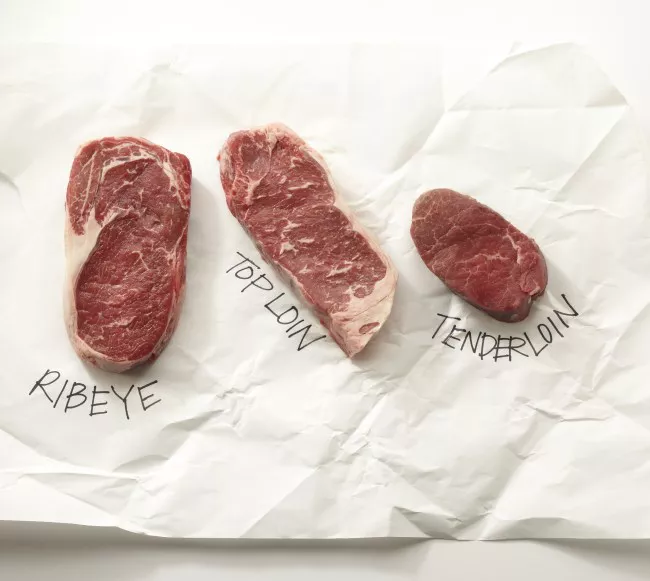

Steak
Grill the perfect steak!
- PIf your steak was marinating, wipe off the wet marinade with a paper towel, then set it down on the hot grill and leave it alone for several minutes without turning.
- After a few minutes, the meat will release its grip on the grill, and you can turn it without tearing the meat; If you start to turn it, and it's still gripping the grill, just give it another minute.
- Sear steaks over high, direct heat, then move them to indirect heat to finish cooking
- Once your steak is done to your liking, remove it to a plate and let it sit for at least 5 minutes before serving or slicing.
- Enjoy!
